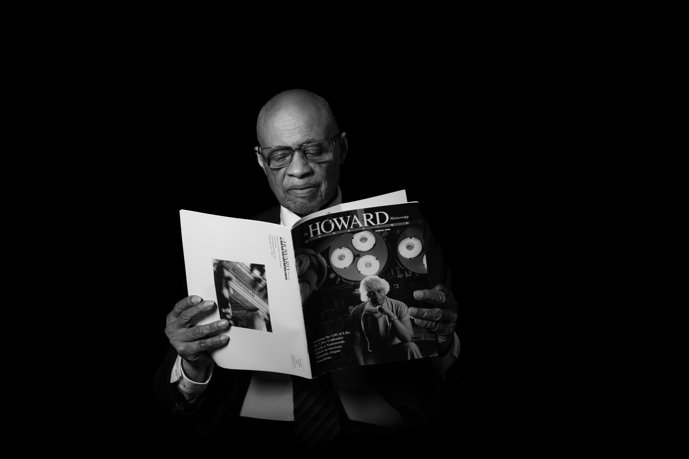

The Portrait Gallery
Nine Exposures.
Forty-One to Come.
Nine revealed today · Fifty by New York
Every portrait in the series is a real scientist, engineer, artist or mathematician — photographed by Michele Zousmer, and paired with their story. Nine exposures are public today; the series grows to fifty across the 2026 tour. Select a portrait to meet them.
Featured — Exposure 01 · Science
Dr. Yasmin Hurd
Neuroscientist · Director, Addiction Institute
“I find it beautiful that every individual is a capsule of a unique story, which is why it is so important to invite all lives into science.”
Dr. Hurd has spent decades advancing our understanding of addiction and the neurobiology of opioid use disorder — inspiring future generations of scientists through rigorous research and mentorship.
All Portraits
The 2026 Series
09 / 50
Nine exposures revealed. The full fifty develop across the 2026 tour — new portraits join the series with each city. Science and mathematics lead; technology, engineering, and the arts are in the darkroom now.
Be First to See Each OneThe Voices
Hear Them
Tell It

Premieres in New York · 2026Every honoree sits for a filmed conversation. The interview series premieres with the New York reception this fall — and lands here after the tour.
Get the Dates First →In Person
A screen can show you the portraits.
Only the room lets you stand in them.
Museum-scale prints, floor-to-ceiling, with the honorees’ voices in the air. The exhibition is designed to be walked through — slowly.
Plan Your Visit →